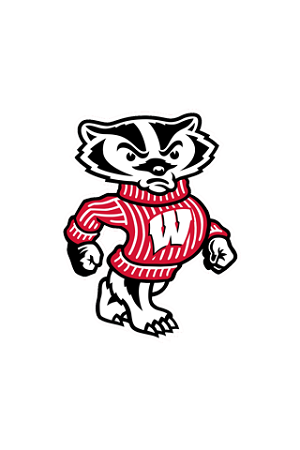

Bucky Badger
In 2009, Bucky Badger made it to the silver screen in the documentary, "Being Bucky".
- Scientific Name: Taxidae Taxus
- Height: 6 Ft
- Age: First seen in 1940
- Habitat: Madison, WI
Buckingham U. "Bucky" Badger is the official mascot of the University of Wisconsin–Madison. He attends all major sporting events for the Wisconsin Badgers as well as hundreds of other events around Wisconsin every year.
Bucky Badger